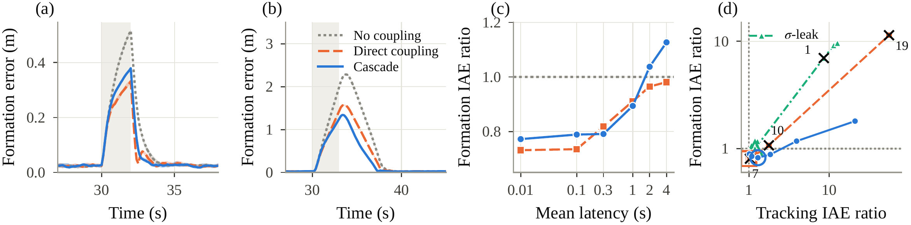

arXiv 预印本 · 2026
通信时延下的多 AGV 编队跟踪控制：参考轨迹平移耦合方法
编队行驶的 AGV 通过 Wi-Fi 交换数据，各链路时延不同且随时间变化。本文的级联结构让带时延的邻居数据只用于平移每辆车自己的参考轨迹，因此对任意有界时延，耦合都不会破坏跟踪。
同一次仿真，两种控制器
两个画面回放高保真 AGV 模型上的同一次仿真（车辆、噪声、Wi-Fi 时延和扰动都相同），只有耦合控制律不同，可在每个画面上方切换。
镜头跟随参考编队，因此减速等待的车队会在画面中向后漂移。车体按缩小比例绘制；网格间距 1 m。
方法
一组差速驱动 AGV 以编队方式行驶，例如共同搬运一件货物。每辆车跟踪各自的参考轨迹，并通过 Wi-Fi 与其他车辆交换数据；每条链路都有各自随时间变化的时延，丢包也会成串出现。如果把带时延的邻居误差直接送进每辆车的跟踪控制律，时延就进入了非线性的车辆闭环。级联结构则让带时延的数据只驱动一个小型滤波器，用来平移本车的参考轨迹，跟踪控制律保持不变，去跟踪平移后的参考。
公式与参数
研究中使用的参数：λ = 1 s⁻¹，Λ = 1 s⁻¹（调参所得），γ = 5 s⁻¹，ρ = 0.6，ē = 5 cm，ψ = 0.7，b = 3 m⁻²。
引理 1 · 可行性
平移后的参考始终可行
饱和使平移后的参考始终是一条独轮车轨迹，速度有已知的下界，因此跟踪控制律在无时延情形下的分析可以原样沿用。
定理 1 和 2 · 收敛性
耦合不会破坏跟踪
与无耦合时一样，在任意有界时延和有向、可切换的通信拓扑下，误差都以指数速度收敛，常数与时延无关，只有收敛速率依赖时延上界。
命题 1 · 收益
持续误差由全队分担
在无向图上，低于限幅 ē 的持续本地误差所造成的编队不一致量，至多缩小为无耦合时的 λ/(λ + Λλ₂(L)) 倍：某辆车持续掉速时，其余车辆会随之放慢。更大的误差可能被放大，因此 ē 应大于预期的持续误差。
仿真结果
高保真模型（通用工业差速 AGV）补上了定理没有涵盖的因素：在漂移时钟上以 50 Hz 运行的控制、激光雷达与里程计融合定位（25 Hz、时延 40 ms、噪声与偏差各 10 mm）、轮速与扭矩限幅、打滑，以及时延 30 ± 15 ms 并带尖峰和突发丢包的 Wi-Fi 链路。级联与无耦合、不带饱和的直接耦合（把带时延的误差直接送入跟踪律）以及 σ-leak 滤波器作比较，各耦合增益都在独立的随机种子上调参。
−21 %
单车打滑后的编队误差积分（IAE），级联相对无耦合。直接耦合达到 −26 %，跟踪代价也更低（+15 %，级联为 +80 %）。
−47 %
单车急停 3 s 后的编队误差积分，级联相对无耦合；直接耦合为 −32 %。
0
级联在 1673 次仿真中的失败次数：时延最长 4 s、丢包率 90 %、12 辆车、8 倍调参增益下都没有失败。直接耦合在增益较大时会失败。

级联还是直接耦合。时延为几十毫秒时，直接耦合在打滑后效果更好，跟踪代价也更低。级联在急停后更好，在任何增益下都没有失败，在全部参数随机抽样中的坏情况尾部也更小；定位噪声为 4 cm 时，直接耦合的稳态编队误差是无耦合的十倍，级联只高 49 %。
时延。平均时延不超过 0.3 s 时，两种耦合都能把打滑后的编队误差积分降低 18–27 %。时延达到 2 s 及以上时，直接耦合的收益基本消失，级联在每个种子上都比无耦合更差。在所有时延下都没有出现失败，因此与时延无关的理论保证并没有体现为可测的优势。
车队规模与通信拓扑。在 8 辆和 12 辆车的完全图上使用单位权重时，直接耦合会失败，级联也失去收益；按节点度归一化权重后两者都恢复正常。在稀疏图上，直接耦合把编队误差积分降低 6–13 %，级联最多降低 8 %，在有向链上反而略有升高（1–5 %）。
代价。其他车辆等待受扰车辆时会落后于各自的参考轨迹，跟踪精度因此下降。两种耦合都会把定位噪声在车辆之间传递；正常运行时约 3 cm 的编队精度由定位偏差决定，任何耦合都无法消除。
局限性
- 仅为仿真：车辆参数是工业差速 AGV 的通用取值，而非某款具体车辆的参数。
- 定理针对参考轨迹持续运动的运动学独轮车模型，不涵盖停止的编队，给出的显式收敛速率也非常保守。
论文、代码与引用
论文（6 页）给出控制律、带证明梗概的稳定性分析和仿真研究。代码仓库（标签 arxiv-v2）包含仿真器和全部已保存的结果：paper/make_paper_figures.py 与 paper/make_paper_tables.py 重新生成论文中的图和表，paper/paper_numbers.py 打印仿真部分每个数字及其来源，run_all.py 重新运行整个研究（18 核约 1.5 小时）。每次仿真都可逐位复现。
@article{bi2026delay,
title = {Delay-Tolerant Formation Tracking for Multi-{AGV} Systems via Reference-Shift Coupling},
author = {Bi, Yunfei},
journal = {arXiv preprint arXiv:2611.32409},
year = {2026}
}